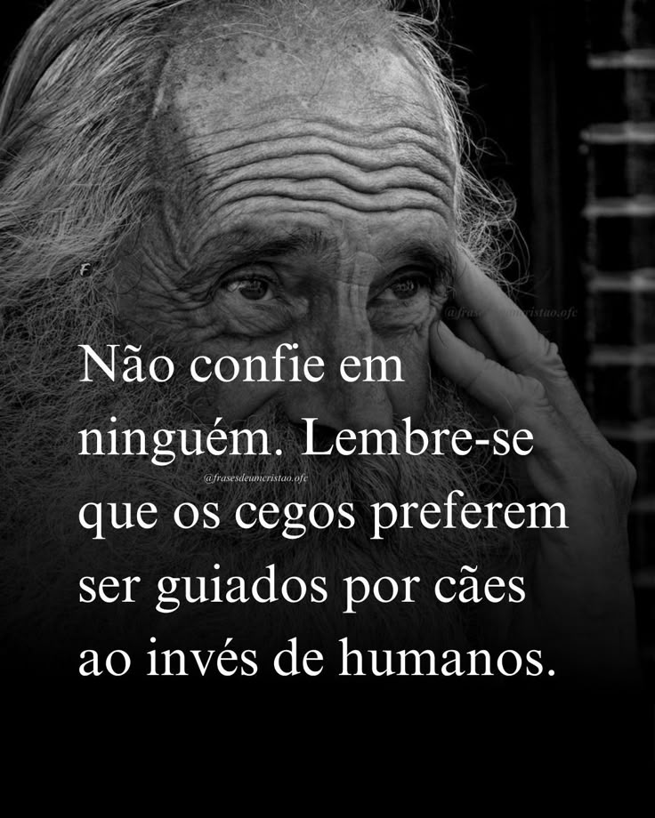

FAKE NEWS;lua ficara verde amanha
Por: ESTUDANTES DA USP
uma noticia falsa afirma que a lua ficara verde amanha.este texto e apenas um exemplo de fake news para um trabalhos escolar.
Feito por Gabriel 1-A, jamais olhe pra lua

Por: ESTUDANTES DA USP
uma noticia falsa afirma que a lua ficara verde amanha.este texto e apenas um exemplo de fake news para um trabalhos escolar.
Por: estudantes da usp
uma noticia falsa afirma que a lua ficara verde amanha alunos da usp estudam e viram que a lua esta ficando verde e isso pode ser ruim para o mundo inteiro siga os planos para nao ser infectado 1 nao olhe para lua 2 nao deixe uma janela aberta nem um pouquinho aberta 3 NAO CONFIE EM NINQUEM
Aqui falaremos sobre 3 pontos positivos e negativos da comunicação do celular